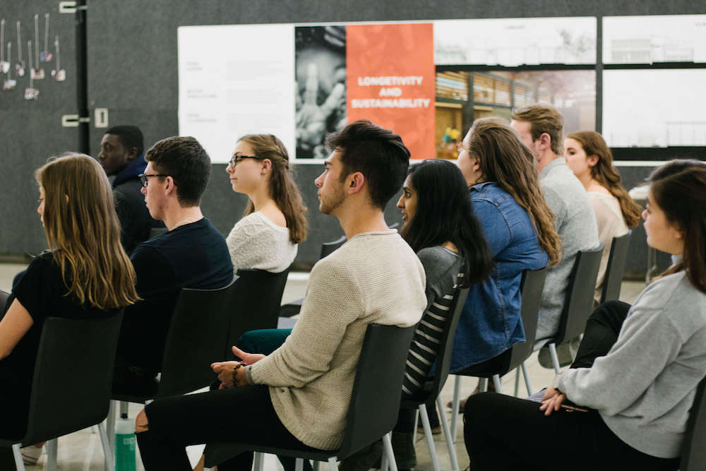
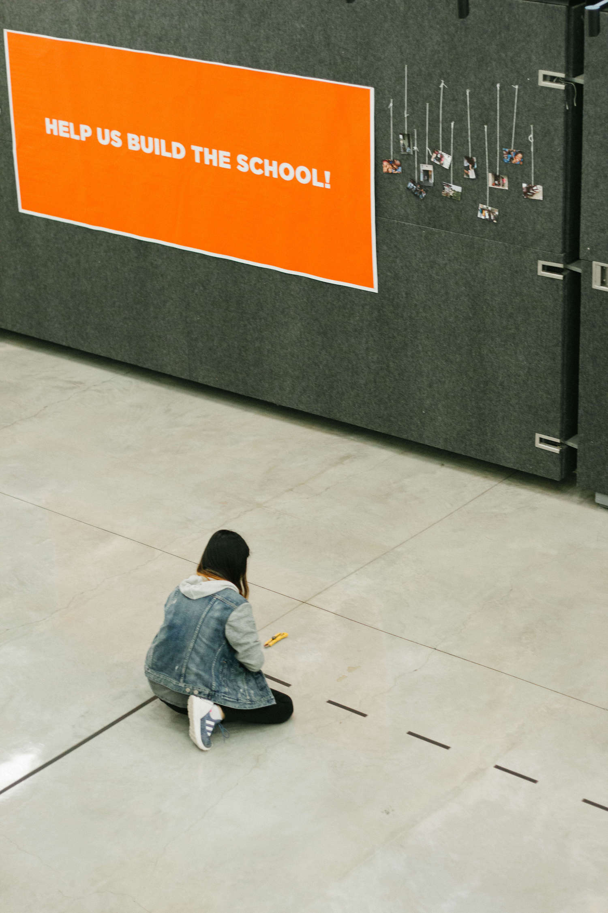

BRIDGING THE GAP BETWEEN CORNELL AND GHANA
STORYTELLING THROUGH DESIGN
Cornell University Sustainable Design (CUSD)’s Sustainable Education Ghana team has partnered with Voices of African Mothers to design a 6-classroom sustainable schoolhouse for girls in Sogakope, Ghana. The project is developed to address the need for improved education for girls in the surrounding areas.
As an user experience and graphic designer on the Marketing and Communications Team of CUSD, we partnered with Sustainable Education Ghana Team to execute a fundraising campaign along with an interactive exhibition called Bridging the Gap Between Cornell and Ghana.

Concept of "Bridging the Gap"
Bridging the Gap Between Cornell and Ghana is an interactive exhibition that walks us through the journey of designing an education hub for girls in Ghana. The purpose of the event is to engage the Cornell Community aboard with Sustainable Education Ghana. Thus, "bridging the gap" between the two groups. Through these interactive and educational talks and activities, we are truly trying to inform what we, as Cornell Students can do to make a difference in shaping the lives of girls in Ghana. And that together, we can achieve something that is greater than ourselves. Through spreading awareness, we were able to raise over $6,000 for construction in Summer, 2017.
Marketing for the Event
We initially brainstormed ways to create marketing materials in an engaging and educational manner that attracts the attention of the Cornell Community by spreading awareness. We settled our main marketing platform to be on social media. Each member of our Marketing and Communications team focused on a slightly different marketing media.I mainly focused on putting together a Sustainable Education Ghana Communication Guide which comprehensively walks through the details of the project. This was a research-intensive process. I wanted to include just enough information for stakeholders to fully understand our project but at the same time engaging enough to appeal to student donors. I decided to heavily focus Sustainable Education Ghana's vision, design process, and student experience. By creating this Communication Guide, I became a better designer, learning from an amazingly talented team who always gave me all kinds of great feedback.


Two members of my team created a series of short promotional videos focusing on the thoughts of SEG members and non-CUSD members of the Cornell Community on the project. First, our members interviewed students from SEG in order to learn about how SEG impacted their Cornell experience. Then, we interviewed students of the Cornell Community who are involved in different social initiatives. They spoke regarding the topics of "giving" and "receiving" and how getting involved in initiatives on Cornell Campus has influenced their outlook and approaches to different situations. Although these students are not personally involved in SEG, they found this project extremely relateable all the same, especially after hearing from students who went to Ghana and brought back valuable experiences and stories to share. These videos were shared throughout Facebook in order to engage as many people as we can. Other members focused on creating designs for our online event page and posters for offline advertisements.

Day of the Event
On the day of the event, we focused on putting together an exhibition that tells the story of Sustainable Education Ghana. A documentary made by an amazing video producer on our team was shown to everyone at the event. Afterwards, members of SEG took turns talking about their experiences and answered questions from the audience. Storytelling through video is immensely powerful and engaging.


In order to make the exhibition as interactive as possible, we used masking tape around the space to delineate the exact measurements of the classrooms built in Ghana and simulate a real student classroom experience (bottom right). We put up posters around the space to chronologically tell the story of SEG from beginning to end. These aren't just ordinary posters: they are ones that encourage audience interactions (top left). Every element was so well-thought out, such as pathfinder signs, small quartercards, and card reminders to send letters to the girls in Ghana (bottom left). We aimed for the perfect balance of interactiveness, a share of informative elements, and overall aesthetics.

What I Learned...
I am blessed and so grateful to be part of this semester-long project. Being able to contribute my ideas to such an important and impactful project helped me grow both as a designer who is more aware of user needs and "the user experience" and as a student involved in the Cornell Community. We also worked so well as a team. Ideas fired around everytime we brainstormed. Together, we learned so much from each other. And most importantly, we had so much fun.